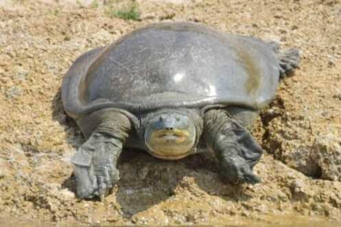

गंगा कछुआIndian Softshell Turtle
Nilssonia gangetica · Trionychidae · REP-0008

- Scientific name
- Nilssonia gangetica (Cuvier, 1825)
- Family
- Trionychidae
- Hindi
- गंगा कछुआ
- Status here
- native
- IUCN
- CR
When to look कब देखें
Present all year.
गंगा कछुआ / Indian Softshell Turtle
Nilssonia gangetica (Cuvier, 1825) — Trionychidae
गंगा कछुआ — गंगा, घाघरा और उनकी सहायक नदियों में पाया जाने वाला एक अत्यंत महत्वपूर्ण, बड़े आकार का देशी मीठे पानी का कछुआ है। अपनी नरम, चमड़े जैसी पीठ (leathery carapace) और लंबी, लचीली गर्दन के कारण यह आसानी से पहचाना जाता है। यह कछुआ प्रकृति संरक्षण के मामले में अति संकटग्रस्त (Critically Endangered) श्रेणी में आता है और भारतीय वन्यजीव संरक्षण अधिनियम, 1972 की अनुसूची I (Schedule I) के तहत सर्वोच्च सुरक्षा प्राप्त है। यह नदियों में मृत जीवों और कार्बनिक कचरे को खाकर जल को स्वच्छ बनाए रखने में मुख्य भूमिका निभाता है। नदी के किनारे रेत का अवैध खनन, मछली पकड़ने के जालों में फंसना और अंडों की चोरी इसके अस्तित्व के लिए सबसे बड़े खतरे हैं।
Quick Identification त्वरित पहचान
| Feature | Description |
|---|---|
| Size & Shape | Large freshwater turtle; adult carapace length ranges from 50–90 cm (can exceed 100 cm); oval and flattened body |
| Carapace | Leathery, flexible dorsal shell (carapace) lacking hard, bony scutes; olive-green to dull grey in colour |
| Head & Neck | Large head with a prominent, snorkel-like fleshy proboscis (snout); head has distinctive black longitudinal streaks in adults |
| Limbs | Fully webbed feet with three claws on each limb, adapted for powerful swimming and digging in mud |
| Plastron | Flat, light greyish-white ventral shell (plastron) with several cartilaginous callosities |
Field tip: Look for a large, flat turtle with a leathery olive-green shell, a tube-like nose, and distinctive black stripes radiating from the forehead. Unlike hard-shelled turtles, it lacks large scales on its shell.
Morphology आकारिकी
Biometrics (typical measurements in the Gangetic plain):
| Measurement | Range |
|---|---|
| Straight carapace length (SCL) | 400–900 mm |
| Straight carapace width (SCW) | 350–750 mm |
| Weight | 10–40 kg |
Body: The dorsal shell (carapace) is leathery and oval, lacking the hard epidermal scutes of other turtle families. The margins are soft and flexible. The underside shell (plastron) is flat and cartilaginous, showing large grey patches.
Head & Neck: The head is large with a pointed, tubular snout that serves as a snorkel, allowing the turtle to breathe while submerged. Limbs are flat, flipper-like, and highly webbed, each bearing three distinct claws.
Vocalisations
Reptiles generally do not possess vocal chords for singing.
- Sound production: Can produce loud, sharp hissing sounds when threatened, cornered, or handled, by rapidly expelling air from its lungs.
Behaviour & Ecology व्यवहार और पारिस्थितिकी
Nilssonia gangetica is a highly aquatic reptile, spending most of its time submerged in mud or deep river pools. It is a powerful swimmer. During the winter months, it can be observed basking on sandy banks or logs during mid-day to thermoregulate, retreating into the water at the slightest disturbance.
Conservation Status संरक्षण स्थिति
IUCN Red List: Critically Endangered (CR)
Wildlife Protection Act (India): Schedule I — hunting, trade, and collection strictly prohibited
Primary threats:
- Sand mining on riverbanks (destroys nesting beaches)
- Entanglement in fishing nets (bycatch)
- Egg collection by local communities
- River pollution and reduced river flow
Conservation actions: Active programs run by organizations like the Turtle Survival Alliance (TSA) and Wildlife Institute of India (WII) focus on nest protection, head-starting hatchlings, and conducting river surveys in the Saryu-Ghaghara basin.
Local situation: Wild populations persist in the Ghaghara and Saryu river channels bordering Basti district, but nests face high pressure from riverbank disturbances.
Life Cycle / Phenology जीवन चक्र
- Nesting: Occurs from October to December. Females dig deep flasks-shaped nests in sandy riverbanks to deposit 10–30 round, hard-shelled eggs.
- Incubation: Exceptionally long; eggs undergo embryonic diapause and hatch in about 9–10 months, timed with the following monsoon floods (July to September).
- Growth & Maturity: Very slow-growing, reaching sexual maturity at around 8–10 years.
- Lifespan: Can live up to 50–70 years in the wild.
Host Plants or Prey आहार
Primary food items:
- Prey: Feeds on benthic mollusks, freshwater crabs, frogs, fish, and occasional waterfowl.
- Scavenging: Readily consumes animal carcasses, performing a vital waste removal role in Ganges basin rivers.
- Vegetation: Occasionally consumes aquatic weeds.
Predators / Natural Enemies शत्रु
- Adults: Humans are the primary predators through illegal poaching for meat.
- Eggs & Juveniles: Feral dogs, Golden Jackals ([MAM-0005 Golden Jackal]), Bengal Monitors ([REP-0004 Bengal Monitor]), and crows regularly raid riverbank nests. Hatchlings are also eaten by predatory fish and storks.
Agricultural / Human Relevance कृषि प्रासंगिकता
Ecological Purifier. By scavenging on decomposing organic matter and animal carcasses, the turtle prevents bacterial proliferation and maintains clean water quality, benefiting the riparian human communities. Historically, it has been poached for meat and calipee, activities that are now strictly prohibited under Schedule I of the WPA.
Expected Locally स्थानीय रूप से अपेक्षित
Not a field record. Written from published accounts for eastern Uttar Pradesh. No confirmed local sighting yet — if you have seen it, that is what the atlas needs.
अभी तक स्थानीय पुष्टि नहीं। यह विवरण प्रकाशित स्रोतों से है, किसी अवलोकन से नहीं।
Occasionally sighted basking on sandy banks of the Ghaghara (Saryu) river along the southern boundary of Basti district. Local fishers are aware of its highly protected status and refer to it as Kathawa or Ganga Kachhua.
Distribution वितरण
Global range: Indus, Ganges, Yamuna, Mahanadi, and Brahmaputra river basins in India, Pakistan, Bangladesh, and Nepal.
In India: Found across the river basins of Northern and Eastern India.
In Uttar Pradesh: Present in the main channels of the Ganga, Yamuna, Ghaghara, Saryu, Gandak, and Rapti.
In Basti district / eastern UP: Sighted in the Saryu/Ghaghara river channels near Basti and its confluences.
Range notes: Populations are declining severely due to nesting beach destruction.
Research Questions शोध प्रश्न
Anyone can investigate these | कोई भी इन प्रश्नों की जाँच कर सकता है
- How does the rate of sand mining correlate with turtle nesting density along the Saryu River? — Map sand mining zones against active nesting sites.
- What is the survival rate of head-started turtle hatchlings released into the Ghaghara River? — Monitor tagged individuals post-release.
- Can you locate tracks of nesting turtles on river beaches during early winter mornings? / क्या आप सर्दियों की सुबह नदी के किनारे रेतीले तटों पर अंडे देने वाले कछुओं के पैरों के निशान ढूंढ सकते हैं? — Survey sandy riverbanks between November and December.
- Does the hatchling sex ratio in Nilssonia gangetica change with varying nest temperatures? — Incubate eggs at different temperatures under controlled conditions.
- What local conservation awareness programs exist in Basti schools regarding turtle protection? / कछुओं के संरक्षण के संबंध में बस्ती के स्कूलों में कौन से स्थानीय जागरूकता कार्यक्रम मौजूद हैं? — Survey local school curricula and student awareness levels.
Similar Species मिलती-जुलती प्रजातियाँ
| Species | How to tell apart | हिंदी |
|---|---|---|
| Lissemys punctata | Much smaller (max 35 cm); carapace has femoral flaps that cover hind limbs; lacks black streaks on head | सुंदरी कछुआ — छोटा आकार, पैरों के फ्लैप |
| Chitra indica | Head is very small and narrow; eyes are situated close to the tip of the snout; shell has a distinct grey-olive marbled pattern | चित्रा — छोटा सिर, धारीदार संगमरमर पैटर्न |
| Hard-shelled turtles (e.g., Pangshura tecta) | Has a hard, bony carapace with prominent keratinized scutes; lacks a snorkel-like snout | कठोर पीठ कछुआ — कठोर कवच, गोल मुँह |
Field rule: Large size, leathery flat shell, tubular snorkel snout, and black head lines in adults distinguish the Gangetic Softshell Turtle.
Taxonomy & Classification वर्गीकरण
Original description. Georges Cuvier described this species as Trionyx gangeticus in 1825 in his work Recherches sur les ossemens fossiles (3rd Edition, Volume 5, Part 2, pages 186, 203). Type locality: Ganges River, India. The genus name Nilssonia honors the Swedish zoologist Sven Nilsson.
Subspecies. Monotypic.
Family and order placement. Placed in the order Testudines, family Trionychidae.
Phylogenetic notes. Nilssonia gangetica is closely related to Nilssonia hurum (Peacock Softshell Turtle).
IUCN status rationale. Listed as Critically Endangered (CR) due to severe population declines (>80% over three generations) caused by exploitation for meat, illegal trade, and habitat destruction of river nesting beaches.
Photo Gallery फोटो गैलरी
References संदर्भ
- Cuvier, G. (1825). Recherches sur les ossemens fossiles, 3rd ed., Vol. 5, Part 2, pp. 186, 203. [original description as Trionyx gangeticus]
- Webb, R.G. (1980). The identity of Testudo punctata Lacépède, 1788 (Testudines, Trionychidae). Bulletin du Muséum National d'Histoire Naturelle Paris, 4(2), 547–557.
- Praschag, P. et al. (2007). Consensus phylogeny of olive-colored softshell turtles (Genus Nilssonia). Organisms Diversity & Evolution, 7(4), 267–276.
- Whitaker, R. & Andrews, H.V. (2003). Crocodile and water turtle conservation in India. Journal of the Bombay Natural History Society, 100(2-3), 454–469.
- Praschag, P., Ahmed, M.F. & Singh, S. (2021). Nilssonia gangetica. IUCN Red List of Threatened Species. Ver. 2021.
- GBIF Occurrence Data — Nilssonia gangetica, Uttar Pradesh (2010–2025).
Source file: species/fauna/reptiles/indian_softshell_turtle.md